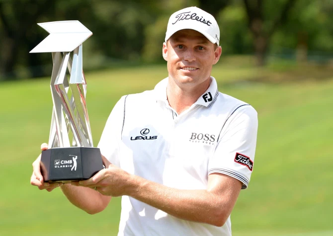

DNBC NEWS
DNBC NEWS
DNBC NEWS
HEALTH SCARE PGA Tour rocked as star Nick Watney tests positive for coronavirus during RBC Heritage tournament
Sam Morgan 19 Jun 2020, 21:07Updated: 19 Jun 2020, 21:30
THE PGA Tour has been rocked after it was confirmed star Nick Watney had tested positive for coronavirus DURING this week's event.
The news comes despite golf bosses insisting just two days ago there had been no positive results from 369 tests for the second straight week.

As reports of a positive test swirled, speculation mounted it was 39-year-old American Watney -
who shot a three-over 74 in the first round - after he mysteriously withdrew.
The PGA Tour later confirmed this in a statement.
The statement read: "PGA TOUR member Nick Watney has withdrawn from the RBC Heritage prior to
the second round after testing positive for COVID-19. On Friday, prior to arriving at the
tournament, he indicated he had symptoms consistent with the illness and after consulting with a
physician, was administered a test and found to be positive.
"Nick will have the PGA TOUR’s full support throughout his self-isolation and recovery period
under CDC guidelines.
"For the health and well-being of all associated with the tournament and those within the
community, the TOUR has begun implementing its response plan in consultation with medical
experts including working with those who may have had close contact with Nick.
"Watney, who travelled privately to Hilton Head Island for the tournament and was not on the PGA
TOUR-provided charter flight, tested negative upon arrival. He is the first PGA TOUR member to
test positive for coronavirus."
The two players Watney played with in first round, Luke List and Vaughn Taylor, are playing on.
This is golf's second tournament since its enforced break due to Covid-19 when the Players
Championship was cancelled on March 12.
No fans are allowed on courses and strict social distancing measures are in place.
The PGA Tour has gone all out to try to protect players' safety.
A special charter plane is being used to carry pros from one tournament to the next - with the
winner granted pride of place in the front seats.
Although now it has emerged five-time PGA Tour winner Watney was not on the flight.
Rory McIlroy recently hit out at some of his fellow European players who have chosen not to
travel to the US during the global crisis.
World ranking points are on offer on the PGA Tour - but not on the European Tour, which returns
next month.
World No 1 McIlroy said: "If I were in their shoes and I was asked to come over to the States
and shelter in place or quarantine for two weeks before these tournaments, I would have done
that.
"Because if you really care about your career and care about moving forward, you should be
here.
"I get there are different variables and families and stuff involved, but we all have the means
to rent a very nice house in a gated community in Florida, and it’s not a hardship for two weeks
to come over and quarantine. It’s fine."